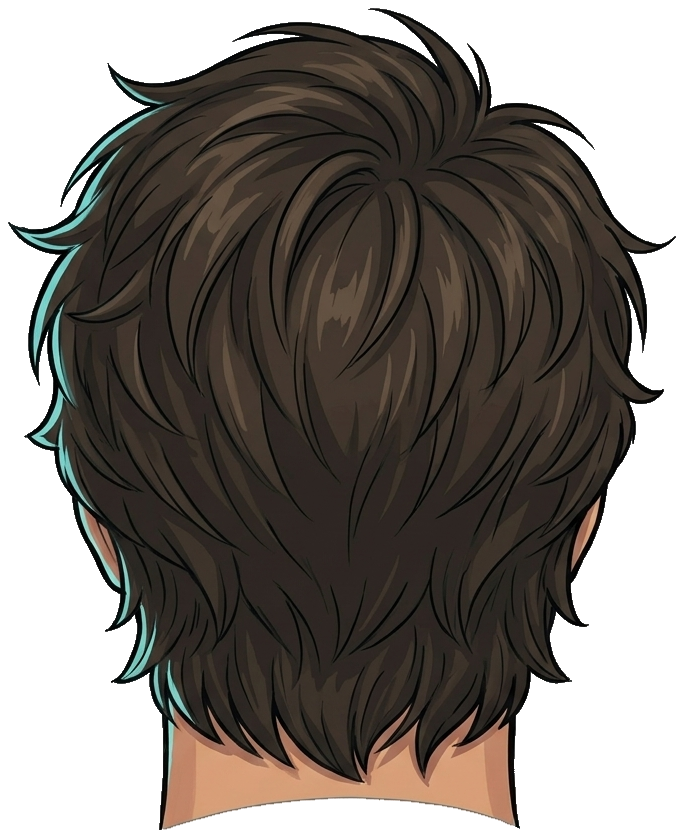
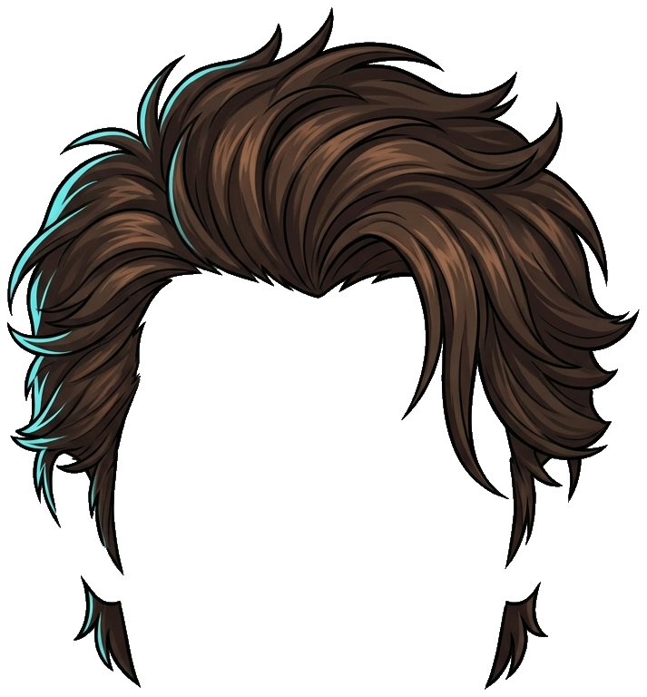
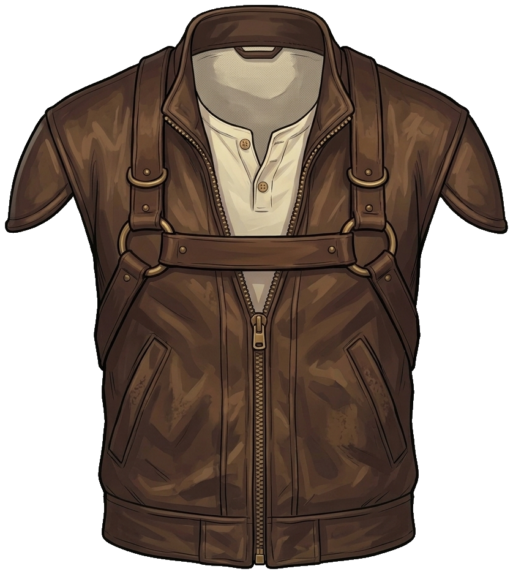
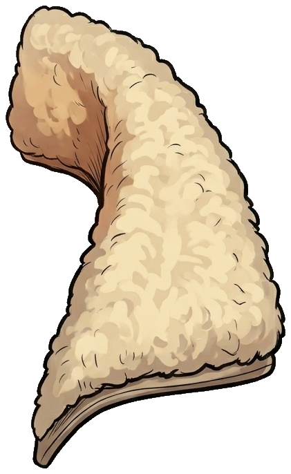

A. Hair & Cranium Junction (2.5× Zoom)
Fail: Silhouette & Lighting Mismatch



Findings: Exposed bald cranium gap on left temple; front hair bangs completely re-styled; detached sideburn tufts floating over cheeks; cyan rim light on face is on the opposite side from the hair's cyan rim light.
B. Neck & Jawline Junction (2.5× Zoom)
Fail: Perspective & Texture Drift


Findings: The generated neck (
04_neck) was drawn from a low worm's-eye angle with harsh anatomical cross-hatching and visible tracheal rings, conflicting with the smooth painterly shading of the Master Bust's throat.
C. Shearling Collar & Henley Opening (2.5× Zoom)
Fail: Double Collar & Seam Gaps


Findings: Because
05_jacket_torso invented an upright brown leather collar around the henley shirt, placing the separated shearling collar halves (06_collar_left/right) on top leaves the extra leather stand-up collar sticking out between them.
D. Shoulders, Harness & Upper Arms (2.5× Zoom)
Fail: Pauldron Ledges & Full-Arm Duplication


Findings: Prompting for "rounded shoulder socket overlap caps" caused the generator to draw flared armor-like cap sleeves on
05_jacket_torso, while 07_upper_arms generated entire bent arms down to the wrist cuffs with no cyan rim light on the left shoulder.